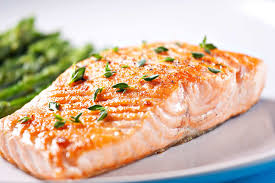

Salmon
Prep : 5 min | Cooking: 10 min
--------------------------------------------------------
Ingredient List:
6oz Salmon
Salt
Pepper
Butter/Oil
>1/2 tsp Brown Sugar
1 tsp mirin
1 tsp soy sauce
Instructions:
1.) Season salmon with salt and pepper before cooking.
2.) Put butter/oil and salmon in pan.
3.) When turning over, put sugar around salmon in pan.
4.) Put in mirin and soy sauce after sugar melts.
5.) Coat other side with sauce.
6.) Put rice vinegar at the end (if wanted).